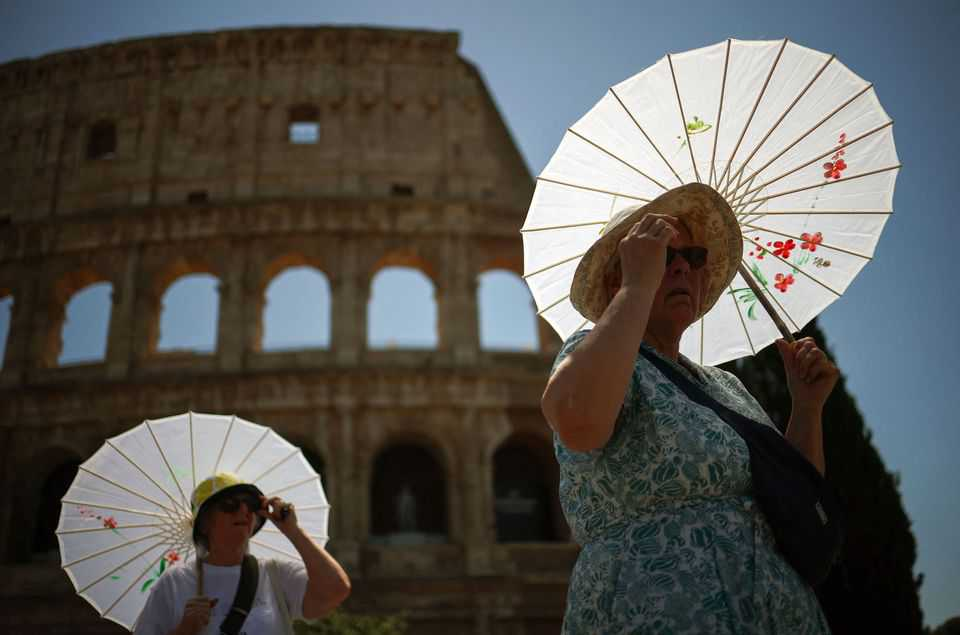

Global warming has made Europe’s heatwave 2-4°C worse
The continent is warming faster than any other
June 25th 2026

ON THE MORNING of June 24th the Shaw Library at the London School of Economics was meant to be full of people discussing the impacts of climate change as part of London Climate Action Week. It was not to be. Britain’s Met Office had, for only the second time, issued a “red” warning about temperatures high enough to pose risks even to the fit and healthy. The organisers decided they could not proceed with their meeting—the subject of which was “Extreme heat: Improving governance and strengthening action”.
Qualitatively, the European heatwave that started on June 18th is not unusual. A horseshoe of lower pressure—a so-called omega block—is sustaining an area of high pressure over the western part of the continent. The air near the surface in this high-pressure region came from the south-east, rather than off the Atlantic, and so started off fairly warm. High pressure above stopped it from losing its heat through convection, a process that produces clouds. A lack of clouds let the Sun stoke things further. Temperatures rose.
Quantitatively, it has been something else (see map). Temperatures over 40°C (104°F) were recorded in much of France and Spain; they were not ruled out for Britain, which has seen them only once before. France saw its hottest day ever on June 24th, with 58 administrative departments under a red alert. The same applied to 16 Italian cities. Germany’s heat record could be broken by June 28th. Across the continent schools are shut, trains are cancelled and power grids are groaning.

What makes an unexceptional weather pattern lead to exceptional heat? The obvious answer—climate change driven by greenhouse gases—is the correct one. A quick assessment offered by ClimaMeter, a consortium of scientists based at France’s Institut Pierre-Simon Laplace, suggests that climate change has made the heatwave 2°C-4°C worse than it would have been under the same conditions in the second half of the 20th century.
Discussions of global warming tend to stress the effects on poor and middle-income countries at low latitudes. That is proper. The extremes experienced are worse, and people who live there have fewer—or none—of the resources needed for adaptation. Recent heatwaves in Asia have been horrific. But higher latitudes are warming faster. Europe’s temperature is rising by 0.56°C per decade, twice the world average and faster than any other continent (see chart).

This is mainly because of a basic principle of climate change. Other things being equal there will be a greater warming at the poles than in the tropics, in part because the poles lose ice, which reflects sunlight, as the planet warms. The geographical centre of Europe, which sits near Vilnius at roughly 55°N, is closer to a pole than that of any other inhabited continent. Also relevant is Europe’s clean air, which allows more sunshine to warm the surface. Air pollution is falling in lots of places, but the European decline has gone on longer and progressed further than most.
Climate change may also be influencing the frequency of omega blocks. But Friederike Otto, a climate scientist at Imperial College London, stresses that it is the outcomes such patterns can now lead to, rather than changes in how often they occur, that matter most. “Heatwaves are becoming more frequent, more severe…and longer-lasting,” says Will Lang of the Met Office.

The health impacts will be dire. In the heatwaves of 2003 there were over 70,000 heat-related deaths across 16 European countries. In 2022—at the time the hottest European summer on record—there were more than 60,000 across 35 countries. In 2023, not quite so hot, estimates were a little under 50,000. Europe has been getting better at protecting itself: a study by Elisa Gallo of the Barcelona Institute for Global Health and colleagues, published in 2024, estimates that without such adaptations the death toll in 2023 would have been around 90,000, and the death rate among the over-80s twice what it was. But if Europe is going to lower the risks of the worsening climate, rather than just keeping up with them, it needs to do more. ■
Curious about the world? To enjoy our mind-expanding science coverage, sign up to Simply Science, our weekly subscriber-only newsletter.